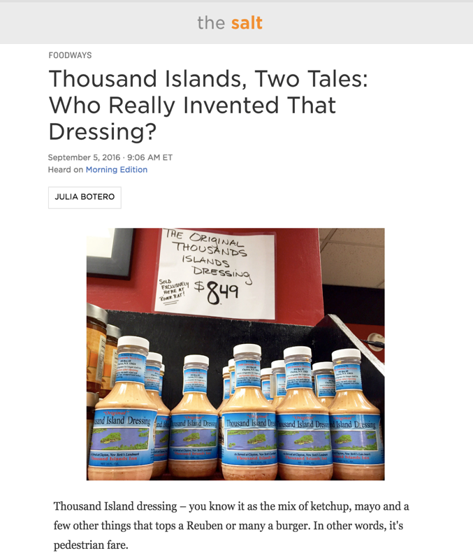

FOODWAYS
Thousand Islands, Two Tales: Who Really Invented That Dressing?
September 5, 2016 - 9:06 AM ET
Heard on Morning Edition
Julia Botero But did you know it's origins trace back to the highest ranks of American society?
Read More...
Correction
thousand island dressing